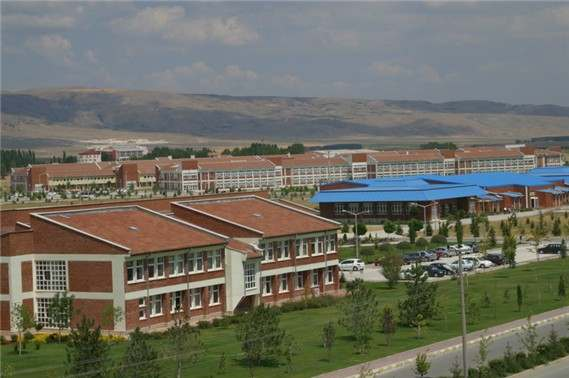
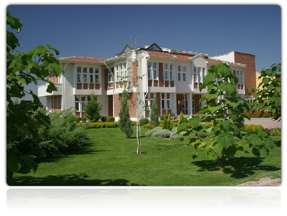

HOME |
LOCAL DİSHES |
HISTORICAL PLACES |
USEFULL LINKS |
ABOUT ME |
CONTACT ME |
REGISTRATION |
My name is Eren ŞAHİN. I'm a student of Anadolu University. I live in Istanbul. I'm 22 years old.
My department is Computer engineering. It's my third year in the department. I hope next year i will graduate. I spend most of my time in the school. It's actually fun because my friends and I enjoy to study and talk together.
I love reading book and playing chess. I alwasy listen music. Our campus is too far and music makes the drive enjoyable.
|  |
<--> |
 |
Previous Page |
Next Page |